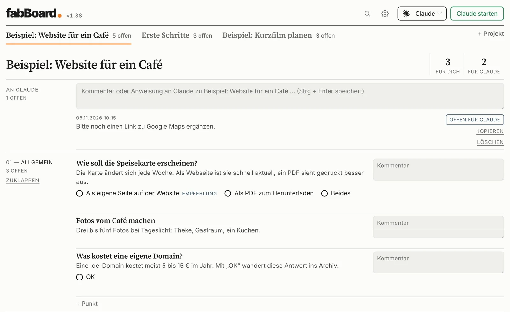
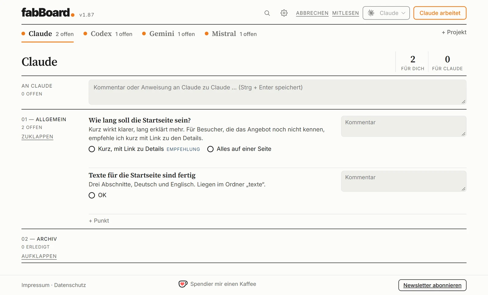

Das Entscheidungsboard zwischen dir und deiner KI
Ein Board für alle deine Projekte: Die KI arbeitet an mehreren Projekten gleichzeitig, fragt dich, und du entscheidest.
fabBoard ist ein kostenloses Programm für alle, die mit einem KI-Modell ihrer Wahl an eigenen Projekten arbeiten wollen – ohne Chat und ohne Technikkenntnisse. Jedes Projekt, ob Website, Text, Recherche oder Programm, hat sein eigenes Board und seinen eigenen Ordner.
01Auftrag schreiben
Schreib ins Board, was die KI tun soll – ganz normal wie eine Nachricht.
02KI starten
Ein Klick, und die KI arbeitet im Projektordner. Währenddessen startest du sie schon im nächsten Projekt.
03Entscheiden, wann es passt
Die KI legt ihre Fragen mit Antwortmöglichkeiten und Empfehlung ins Board. Du klickst die Antwort an, sie setzt sie um.
BeispielprojekteDrei Projekte zum Ausprobieren.
Bei der Einrichtung kannst du drei Beispielprojekte anlegen: eine Website für ein Café, einen Kurzfilm und „Erste Schritte“ zum Üben. Im Bild hat die KI eine Frage mit Antwortmöglichkeiten und einer Empfehlung ins Board gelegt. Du klickst die Antwort an, und die KI setzt sie um.

Power-UserVier KIs, vier Projekte, gleichzeitig.
Leg für jedes Modell ein eigenes Projekt an und nenn es nach der KI: Claude, Codex, Gemini und Mistral. Jedes Projekt ist fest mit seinem Modell verknüpft. So gibst du allen vier gleichzeitig Aufträge, und die Fragen jeder KI landen in ihrem eigenen Reiter. Der orange Punkt zeigt, welche KI gerade arbeitet.
Dafür brauchst du bei jedem Anbieter ein eigenes Konto.

- Mehrere Projekte gleichzeitigIn einem Fenster, du behältst den Überblick.
- Du entscheidest, die KI arbeitetJede Entscheidung bleibt im Board nachvollziehbar.
- Freie Wahl der KI, je ProjektClaude, ChatGPT, Gemini, Mistral oder ein Modell auf dem eigenen Rechner.
- Einrichtung ohne VorwissenKI per Knopf installieren und im Browser anmelden.
- Deine Daten bleiben bei dirNormale Dateien auf deinem Rechner, kein Konto, keine Statistik.
- Kostenlos und Open SourceMIT-Lizenz, Deutsch und Englisch, hell und dunkel.
- Windows 10 oder 11 (Mac geplant)
- Ein Konto bei einer KI (z. B. Claude oder ChatGPT), ein eigener API-Schlüssel oder ein Modell auf dem eigenen Rechner
- Sonst nichts: fabBoard holt alles Nötige selbst, ohne Administratorrechte.
Klick auf den Knopf und öffne die heruntergeladene Datei fabBoard-Setup. Die Einrichtung führt dich Schritt für Schritt durch alles Weitere.
fabBoard herunterladenVorabversion, noch nicht signiert: Windows zeigt beim Öffnen eine Warnung. Klick auf „Weitere Informationen“ und dann auf „Trotzdem ausführen“. Ist in Windows die „Intelligente App-Steuerung“ eingeschaltet, kann sie die Installation ganz blockieren. Was dann hilft, steht nach dem Klick auf „Herunterladen“.
- Öffne die Datei „fabBoard-Setup“ aus deinem Downloads-Ordner.
- Zeigt Windows eine blaue Warnung? Das ist bei neuen Programmen normal. Klick auf „Weitere Informationen“ und dann auf „Trotzdem ausführen“.
Passiert nichts, oder meldet Windows, die App sei blockiert?
Das ist kein Fehler und liegt nicht an dir. Windows hat dann eine zusätzliche Schutzfunktion eingeschaltet, die „Intelligente App-Steuerung“. Sie lässt nur Programme zu, die Microsoft schon kennt. fabBoard ist noch neu und noch nicht signiert, deshalb wird es zurückgehalten.
Du hast zwei Möglichkeiten: Entweder du schaltest die Schutzfunktion kurz aus (Windows-Sicherheit → App- und Browsersteuerung → Einstellungen der intelligenten App-Steuerung → Aus), öffnest die Datei noch einmal und installierst fabBoard. Oder du lässt es einfach sein und wartest, bis fabBoard signiert ist. Beides ist völlig in Ordnung.
Wenn du die Schutzfunktion ausgeschaltet hast: Bei aktuellem Windows (Stand ab April 2026) kannst du sie an derselben Stelle jederzeit wieder einschalten.